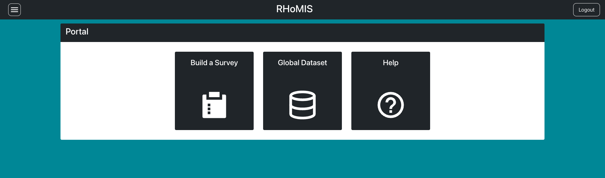

Quickstart¶
Creating an Account¶
If you using RHoMIS for the first time, you will need to create an account. Visit the RHoMIS App. When opening the app, you will be directed to the login page.
Click the option to register, as shown in the video below. Fill in the form and then submit, you will be redirected back to the login page. Use the username and password you have just entered, and login
RHoMIS Portal¶
Once you have logged in for the first time the main RHoMIS application will look like this:
You can click on any of the panels in the centre.
Build a Survey: Go to the RHoMIS survey builder and begin designing a survey (more guidance here)
Global Dataset: Visit out page on the Harvard Dataverse
Help: Visit this documentation for more guidance.